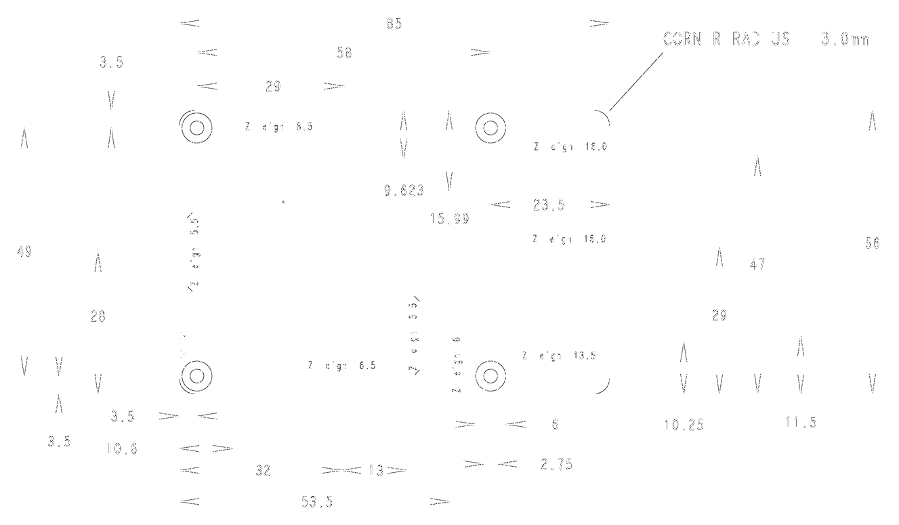
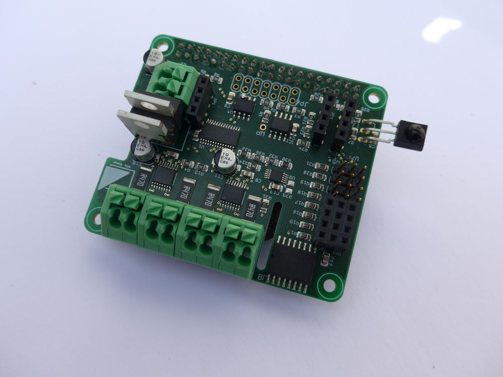
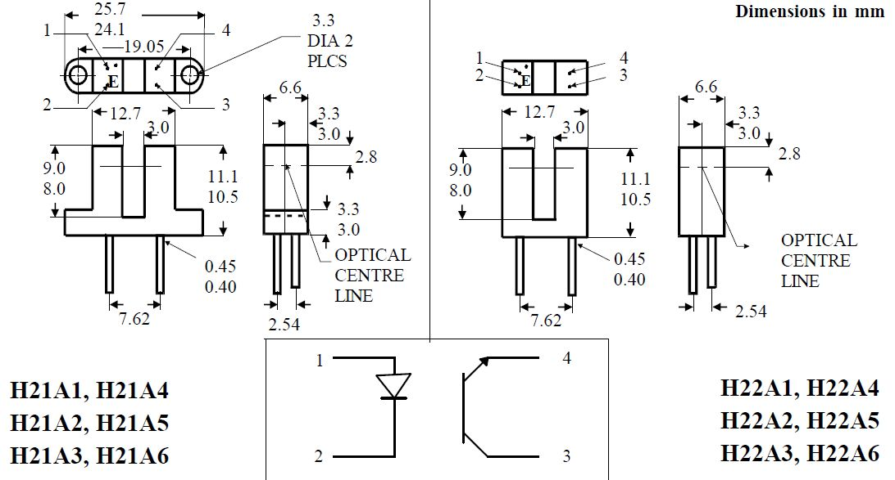

Smart Car
HTL Oberösterreich
Franz Parzer
12. Februar 2020
Projektbeschreibung
Um Digitalisierung zu visualisieren braucht es ein Vehikel. Dieser Umstand bringt natürlich ein Fahrzeug in den Fokus,
davon gibt es aber viele. Der besondere Umstand, dass Digitalisierung im
Wesentlichen eine Vernetzung aller betroffenen Teilnehmer bedeutet, hat als Konsequenz zur
Folge, dass es nicht nur ein Fahrzeug geben kann, sondern viele, die untereinander vernetzt sind.
Es bestand am Ende der Diskussion in der Mobilitätsgruppe der Konsens, ein Fahrzeug zu
entwerfen, das definierte Schnittstellen hat, und an verschiedenen Standorten von verschiedenen
Fachrichtungen entwickelt werden kann.
Ziel ist es eine "Gänsefahrt" der unterschiedlichen Fahrzeuge zu realisieren. Das erste wird
gesteuert, die restlichen fahren hintereinander her. Dabei ist vorstellbar, Logos, Buchstaben oder
ähnliches von den Fahrzeugen bewegen zu lassen, damit es in Summe ein großes Ganzes gibt.
Als Disziplinen seien nur einige als Beispiel genannt: der Maschinenbau kümmert sich an einem
Standort um das Chassis, an einem anderen um die Konstruktion der notwendigen Accessoires
um die Sensoren und Aktoren anbringen zu können. An einem dritten Standort wird die
Karosserie entwickelt. Dabei wurde festgehalten, dass Standardbauelemente zugekauft werden
können, aber der Fokus klar auf der Entwicklung, Konstruktion und Fertigung in der Schule im
Rahmen von Unterrichtsprojekten liegt.
Schnittstellen müssen dann zur Leistungselektronik, Akkutechnologie für den Antrieb und zur
Informationstechnologie definiert werden. Ob die Kopplung der Fahrzeuge via Browser oder App
oder einen anderen Mechanismus passiert, ist zu definieren, die Parameter der Fahrzeuge
müssen auf jeden Fall erfasst und protokolliert werden.
Features
Raspberry Pi Version 3 oder 4 (WLAN, BT)
2-Rad oder 4-Rad Antrieb
2-Räder und ein Stützrad oder 4-Räder
mit oder ohne Lenkung
ohne oder mit Ultraschallabstandsmessung
mit oder ohne Line Follower
mit oder ohne Raddrehzahlmessung
ohne oder mit Kamera
mechanical
Leistungselektronik
mit zu viel Peripherie, aber bereits vorhanden (CAD: Eagle)
Akku
Micro-USB für Raspberry Pi 3, USB-C Raspberry Pi 4

Media Markt praktisch mit dem kurzen Kabel
Antrieb
ab 0,57€
Bitte nicht selber fertigen!

Räder
ab 11,18€ für 6 Räder mit Getriebemotor
Aber damit könnten wir uns "unterscheiden", sind sehr sichtbar!
Lenkung
Eine "echte" Lenkung ist natürlich nett, aber konstruktiv aufwändig.
Wir würden auch ein Servo brauchen!

Ultraschallabstandsmessung
Ich habe mich bemüht und ein Kernel Modul umgeschrieben (lassen 😁)

Suchbegriff: HC-SR04
Line Follower
Ist - wenn überhaupt - nur beim ersten Fahrzeug nötig

Meiner ist von SunFounder
Raddrehzahlmessung
ABS werden wir nicht einbauen, aber für die Datenerfassung eventuell brauchbar.
Kamera
Gute Erfahrungen haben wir mit der original Raspberry Pi Kamera gemacht (5MP).


Monitor (Display)
Die Smart Cars können sich "aneinanderreihen", wenn eines den QR Code des Vordermannes nimmt und "1" dazuzählt.
Anforderungen
| Promotion Car | Schülerfahrzeug | |
|---|---|---|
| Raspberry Pi | 3 Model B+ | 3 Model B+ |
| Leistungselektronik | HAT | HAT |
| Akku | Powerbank | ? |
| Antrieb | 4-Rad | 4-Rad |
| Räder | 4 | 4 |
| Lenkung | ohne | ohne |
| Ultraschallabstandsmessung | mit | ohne |
| LineFollower | ohne | ohne |
| Raddrehzahlmessung | mit | ohne |
| Kamera | mit | ohne |
| Monitor (Display) | mit | ohne |
Diskussion
Abstimmung
Arbeitspakete
| Thema | Standort | Ansprechpartner | Kontakt |
|---|---|---|---|
| Elektronik | Steyr | Parzer | Franz Parzer |
| Räder | xxx | ||
| Chasis | xxx | ||
| Halterung Raspberry Pi | xxx | ||
| Halterung Kamera | xxx | ||
| Halterung Monitor (Display) | xxx | ||
| Halterung Akku | xxx | ||
| Halterung Ultraschallabstandsmessung | xxx | ||
| Karosserie | xxx | ||
| Software am Smart Car | Steyr | Parzer | Franz Parzer |
| Software der "Cloud" | xxx |
Schnittstellen
| Bereich | Standort | Koordinator | Kontakt |
|---|---|---|---|
| Elektronik | Steyr | Parzer | Franz Parzer |
| Mechanik | xxx | ||
| Software am Smart Car | Steyr | Parzer | Franz Parzer |
| Kommunikation der Smart Cars untereinander | xxx | ||
| Kommunikation mit der "Cloud" | xxx | ||
| Datenauswertung | xxx |